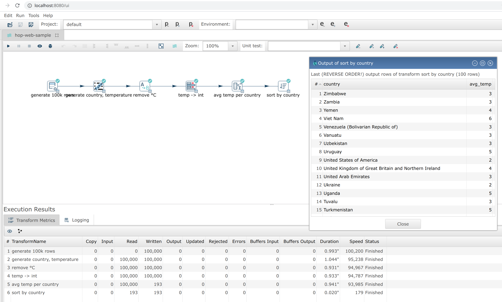
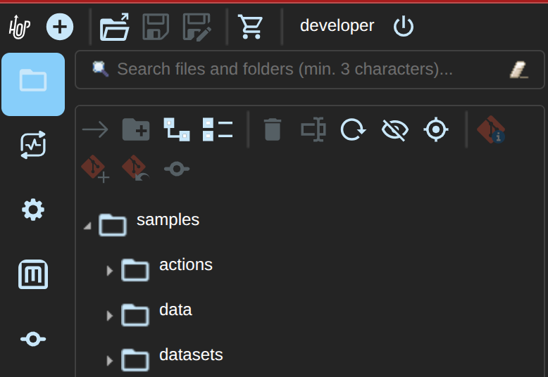
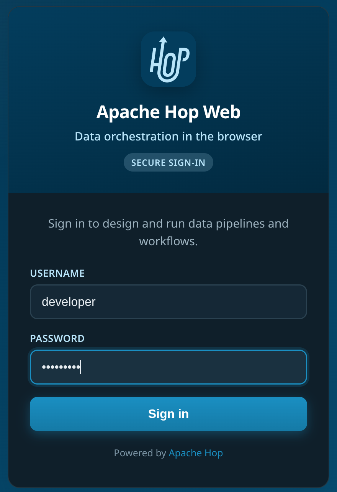
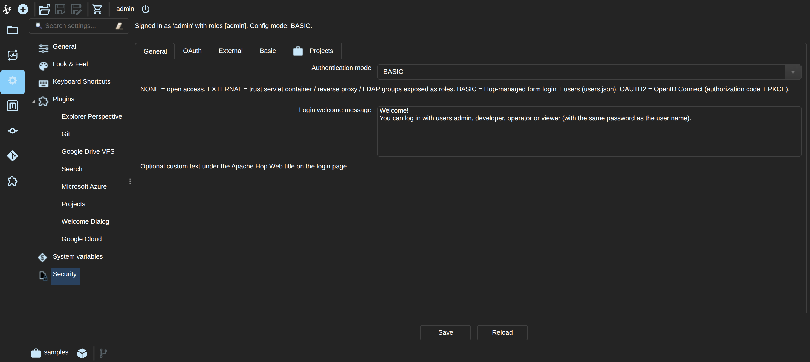
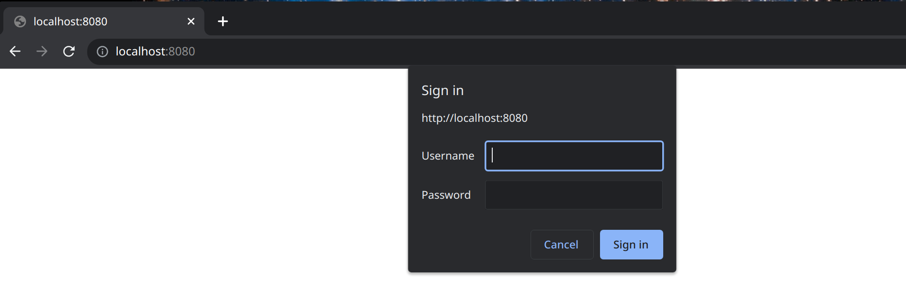

Hop Web
Hop Web is a web-based Hop Gui version. It uses code conversion to translate the default Hop Gui desktop application to a web-based version. Even though not perfect, Hop Web provides the default Hop Gui user experience in a browser.
Getting Hop Web
Hop Web is included in the default Hop build. With each build, an update is pushed to Docker Hub.
This continously updated docker image is by far the easiest way to try out Hop Web:
Pull the latest build with: docker pull apache/hop-web.
Once the image has been pulled, start Hop Web with docker run -p 8080:8080 apache/hop-web:latest
The Hop Web container should only take a couple of seconds to start. Your container logs should output similar to the example below:
22-Apr-2021 18:13:39.786 INFO [main] org.apache.catalina.startup.HostConfig.deployDirectory Deployment of web application directory [/usr/local/tomcat/webapps/ROOT] has finished in [8,274] ms
22-Apr-2021 18:13:39.790 INFO [main] org.apache.coyote.AbstractProtocol.start Starting ProtocolHandler ["http-nio-8080"]
22-Apr-2021 18:13:39.797 INFO [main] org.apache.catalina.startup.Catalina.start Server startup in [8319] milliseconds
2021/04/22 18:14:37 - Hop - Projects enabled
2021/04/22 18:14:37 - Hop - Enabling project : 'default'Once your container has started, Hop Web is available at http://localhost:8080/ui. You’ll feel right at home!

Starting Hop Web with a project and environment
Hop Web accepts the same variables as the default Apache Hop container image to allow Hop Web users to specify their project and environment when starting a Hop Web container:
| Environment Variable | Description |
|---|---|
| Name of the Hop project to create in the container. You also need to specify the |
| Path to the home of the Hop project. |
| Optional name of a one-level parent project to register before the main project (required with |
| Path to the home of the parent Hop project. |
| The name of the Hop environment to create in the container. If you do not set this variable, no environment will be created. When using an environment a project has to be created too |
| This is a comma separated list of paths to environment config files (including filename and file extension). |
| Directory for |
| Per-user UI audit data ( |
Example docker run command to start Hop Web with a project and environment:
docker run -it --rm \
--env HOP_PROJECT_FOLDER=/project \
--env HOP_PROJECT_NAME=web-samples \
--env HOP_ENVIRONMENT_NAME=web-samples-test \
--env HOP_ENVIRONMENT_CONFIG_FILE_NAME_PATHS=/project-env/web-samples-test.json \
--name hop-web-test-container \
-p 8080:8080 \
-v <PATH_TO_YOUR_PROJECT>:/project \
-v <PATH_TO_YOUR_ENVIRONMENT>:/project-env \
apache/hop-webDo not mount environment JSON at /config. That path is reserved for Tomcat tomcat-users.xml / web.xml when you use EXTERNAL authentication.
This example still keeps hop-config.json and GUI settings inside the container. For a layout that survives replacing the image, persist HOP_CONFIG_FOLDER and the project home on volumes — see below.
Upgrade-friendly deployment
The default and samples projects that ship in the image are a starter layout. Save real pipelines and workflows on the host or on a volume, not under the image’s own config/projects/ tree.
Set HOP_CONFIG_FOLDER and HOP_AUDIT_FOLDER to mounted paths so project registrations, security files, and UI audit data survive docker pull of a new apache/hop-web tag. The official image already includes the standard plugin set; extra JDBC drivers belong on a separate folder or HOP_DRIVERS_DOWNLOAD.
The full persist/replace table, Compose example, and upgrade steps are in the Hop Web in Docker page.
Authentication
Hop Web runs on a Tomcat server by default and ships with no authentication (open access). For any shared or production deployment you should put an authentication layer in front of it.
Persist HOP_CONFIG_FOLDER/security/ (or the whole config folder) across container upgrades so users, role mappings, and project access rules are not lost. See Hop Web in Docker: persistence and upgrades. |
There are two complementary layers:
-
Authentication (who are you?) — Hop-managed BASIC form login, OAuth2/OIDC, servlet container / reverse proxy (
EXTERNAL), or open access (NONE). -
Authorization (what may you do?) — Hop maps roles to built-in Hop roles and uses them to enable or disable menus, toolbars, and actions (save, run, edit, and so on).
The same security constraint must cover the whole application (/), not only /ui. Hop Web co-deploys the RAP UI, RAP service handlers, and the Hop Server servlet under /hop/ on the same origin. |
The Hop Server API under /hop/ follows the same authorization as the rest of Hop Web. In the authenticated modes (BASIC, EXTERNAL, OAUTH2) each endpoint requires the matching permission from the caller’s role — for example a *Read-only user can call status and the status/image endpoints but not addPipeline, startPipeline, execWorkflow, or the register/remove endpoints, and an Operator can run and stop but not deploy (add*) or remove. Endpoints that are not recognized are denied by default. In mode NONE (the default, open install) /hop/* is unauthenticated just like /ui; put an authentication layer in front of Hop Web for any shared deployment. |
Built-in Hop roles
When a user is authenticated, Hop Web reads the servlet Principal and container roles and maps them to one or more of these built-in roles:
| Hop role | Typical container role names | Capabilities |
|---|---|---|
Admin |
| Full access, including security administration and marketplace plugin install/remove ( |
User (developer) |
| Create, edit, save, delete, execute, metadata CRUD. No security administration or marketplace install. |
Operator |
| View and execute only. No save, edit, delete, metadata write, or marketplace install. |
Read-only |
| View files and metadata only. No execute and no mutations. |
If the user is authenticated but none of the known role names match, Hop assigns the User role so existing single-role apachehop samples keep working with full developer access.
When nobody is authenticated (default open install), Hop treats the session as unrestricted (all actions enabled), matching historical behavior.
The browser window title shows the authenticated username when present (for example Hop - 2.19.0 [alice]). The main toolbar also shows the signed-in username to the left of the Log off button (Hop Web only):

Temporary session privileges
Next to the username, a session privilege combo lets you temporarily lower your effective role without logging out—for example switch from Admin to Read-only or Operator while browsing a project, then choose Full access to restore login rights.
-
You can only select a role whose permissions are a subset of your login-time (base) privileges (no elevation).
-
Username and audit identity stay the same; only UI authorization changes.
-
Open editors are not closed; the next save/edit uses the new permissions (dialogs and canvas already re-check).
-
Security configuration still requires Admin at the effective level—downgrade to Read-only hides it until you restore Full access.
-
Marketplace install/uninstall and hop-env install spec Apply also require Admin (
plugin.manage) at the effective level.
Desktop unrestricted sessions can use the same control to simulate Operator / Read-only.
Marketplace and authorization
The Tools → Marketplace dialog remains available for browsing the catalog when authentication is enabled. Install, Uninstall, repository configuration, and hop-env install spec Apply require the plugin.manage permission (built-in Admin role only). Validate (drift check without installing) does not.
Plugin installs affect the shared server installation for all Hop Web users; they are not per-session. The hop marketplace CLI on the host is not gated by Hop Web roles (use OS access control for that).
Per-user audit data (open tabs, project history, and so on) is stored under HOP_AUDIT_FOLDER/users/<username>/ when a principal is available. Usernames are sanitized for path safety (for example mattcasters@gmail.com becomes mattcasters_gmail.com).
In the Docker image the default is HOP_AUDIT_FOLDER=/tmp/hop-web-audit (writable by the hop process without a bind mount). If the configured folder is not writable, Hop Web falls back to ${java.io.tmpdir}/hop-web-audit and logs a warning. To keep audit data across container restarts, mount a volume and set the same path, for example:
-e HOP_AUDIT_FOLDER=/tmp/hop-web-audit \
-v /host/path/to/audit:/tmp/hop-web-auditTomcat BASIC authentication (EXTERNAL)
The default Hop Web docker image picks up tomcat-users.xml and web.xml files and moves them to the correct location before Hop Web starts.
Single user (minimal)
A minimal sample tomcat-users.xml file (legacy single role apachehop → Hop User):
<?xml version='1.0' encoding='utf-8'?>
<!--
~ Licensed to the Apache Software Foundation (ASF) under one or more
~ contributor license agreements. See the NOTICE file distributed with
~ this work for additional information regarding copyright ownership.
~ The ASF licenses this file to You under the Apache License, Version 2.0
~ (the "License"); you may not use this file except in compliance with
~ the License. You may obtain a copy of the License at
~
~ http://www.apache.org/licenses/LICENSE-2.0
~
~ Unless required by applicable law or agreed to in writing, software
~ distributed under the License is distributed on an "AS IS" BASIS,
~ WITHOUT WARRANTIES OR CONDITIONS OF ANY KIND, either express or implied.
~ See the License for the specific language governing permissions and
~ limitations under the License.
~
-->
<tomcat-users>
<role rolename="apachehop"/>
<user username="apachehop" password="password" roles="apachehop" />
</tomcat-users>Multi-role sample
To exercise Admin / User / Operator / Read-only in Tomcat, declare the Hop role names and assign them to users. Any authenticated role listed in the <auth-constraint> may log in; Hop then maps the user’s roles to UI permissions.
<?xml version='1.0' encoding='utf-8'?>
<tomcat-users>
<role rolename="hop-admin"/>
<role rolename="hop-user"/>
<role rolename="hop-operator"/>
<role rolename="hop-readonly"/>
<user username="admin" password="change-me" roles="hop-admin"/>
<user username="developer" password="change-me" roles="hop-user"/>
<user username="operator" password="change-me" roles="hop-operator"/>
<user username="viewer" password="change-me" roles="hop-readonly"/>
</tomcat-users>In web.xml, allow every role that should be able to open Hop Web:
<security-constraint>
<web-resource-collection>
<web-resource-name>Hop Web</web-resource-name>
<url-pattern>/*</url-pattern>
<http-method>GET</http-method>
<http-method>POST</http-method>
</web-resource-collection>
<auth-constraint>
<role-name>hop-admin</role-name>
<role-name>hop-user</role-name>
<role-name>hop-operator</role-name>
<role-name>hop-readonly</role-name>
</auth-constraint>
<user-data-constraint>
<transport-guarantee>NONE</transport-guarantee>
</user-data-constraint>
</security-constraint>
<login-config>
<auth-method>BASIC</auth-method>
</login-config>
<security-role><role-name>hop-admin</role-name></security-role>
<security-role><role-name>hop-user</role-name></security-role>
<security-role><role-name>hop-operator</role-name></security-role>
<security-role><role-name>hop-readonly</role-name></security-role> Prefer HTTPS in production (transport-guarantee CONFIDENTIAL, or terminate TLS at a reverse proxy). BASIC auth sends credentials on every request; combine it with TLS and digested passwords (see below). |
UI disablement (for example hiding Save for a read-only user) is applied from the mapped Hop role. Menus, toolbars, context actions, and keyboard shortcuts (for example Ctrl+S) are gated. Save, run, export, explorer create/delete/rename, and metadata create/edit/rename/duplicate/delete also re-check permission and show an Access denied dialog if invoked without rights. Transform, action, and metadata settings dialogs open in read-only mode when the user lacks edit permission (file.edit or metadata.write): inputs cannot be changed, OK is disabled, and Cancel / Close / Help remain available. The same applies to metadata editors opened as tabs in the Metadata perspective. |
Always keep untrusted clients off the network and use container/proxy auth on /*. Further hardening of remaining mutation paths continues in subsequent releases.
Optional instance config file HOP_CONFIG_FOLDER/security/security-config.json can set mode and custom container-role → Hop-role mappings (see docker/local-auth-config/security-config.json for a sample).
Hop-managed BASIC authentication
Hop Web can enforce authentication itself (no Tomcat tomcat-users.xml required). When mode is BASIC, a styled Hop Web sign-in page (/login) collects username and password; a servlet filter validates them against HOP_CONFIG_FOLDER/security/users.json (PBKDF2 hashes) and stores the session principal. Optional HTTP Authorization: Basic is still accepted for API clients.
The login page shows the Apache Hop logo, title, and an optional custom welcome message (Configuration → Security → General, or welcomeMessage in security-config.json):

Environment variables (evaluated at startup):
| Variable | Purpose |
|---|---|
| Set to |
| Create the first admin when the user store is empty |
|
|
|
|
Example Docker run:
docker run -it --rm -p 8080:8080 \
-e HOP_WEB_SECURITY_MODE=BASIC \
-e HOP_WEB_SEED_DEMO_USERS=true \
-v hop-web-security:/usr/local/tomcat/webapps/ROOT/config/security \
apache/hop-webThis volume keeps users.json only. To keep project registrations, GUI settings, and project access rules as well, persist the whole HOP_CONFIG_FOLDER as shown in Hop Web in Docker.
Or from a local source build:
./docker/run-hop-web-local-with-basic.shConfiguration Perspective → Security
The Security tab appears only in Hop Web, and only for administrators (role with security.manage, or an unrestricted session when authentication mode is NONE). It is not shown in the desktop Hop GUI. The page is split into tabs:
-
General — authentication mode (
NONE/EXTERNAL/BASIC/OAUTH2) and login welcome message -
OAuth — OIDC issuer, client id/secret, redirect, scopes, role/username claims, PKCE
-
External — container / IdP / LDAP group → Hop role mappings (also used for OAuth claim groups)
-
Basic — Hop-managed users (
users.json: username, role, enabled, password) -
Projects (Projects plugin) — which users, Hop roles, or LDAP/IdP groups may open which projects

Save writes security-config.json and, for BASIC, users.json under HOP_CONFIG_FOLDER/security/. Project access rules are stored in projects-access.json in the same folder.
When project access control is enabled, the project switcher and startup project load only show allowed projects; security administrators always retain full access. Desktop / unrestricted sessions are not filtered. Keep this security/ directory on the same persisted HOP_CONFIG_FOLDER volume as hop-config.json so upgrades do not drop users or project mappings.
Do not combine Hop-managed BASIC with a Tomcat <security-constraint> on the same deployment; pick one AuthN path.
OAuth2 / OpenID Connect
When mode is OAUTH2, Hop Web uses the authorization code flow with PKCE against an OIDC-compliant IdP (Keycloak, Microsoft Entra ID, Google, Okta, …).
| Setting | Description |
|---|---|
Issuer URL | OIDC issuer (e.g. |
Client ID / secret | Confidential clients set a secret (or |
Redirect URI | Defaults to |
Scopes | Default |
Role claim | Claim path for groups/roles (e.g. |
Username claim | Default |
Environment variables (applied at startup into security-config.json when set): HOP_WEB_SECURITY_MODE=OAUTH2, HOP_WEB_OAUTH_ISSUER, HOP_WEB_OAUTH_CLIENT_ID, HOP_WEB_OAUTH_CLIENT_SECRET, HOP_WEB_OAUTH_REDIRECT_URI, HOP_WEB_OAUTH_SCOPES, and optionally HOP_WEB_OAUTH_ROLE_CLAIM / HOP_WEB_OAUTH_USERNAME_CLAIM.
If you set HOP_WEB_OAUTH_ROLE_CLAIM or HOP_WEB_OAUTH_USERNAME_CLAIM in the environment (or leave old values exported in your shell), they override the same fields in security-config.json on container start. The local OAuth run script only passes those env vars when you export them yourself — it does not inject Keycloak-style defaults. Prefer editing the config file (or Configuration → Security → OAuth / External) and leaving claim env vars unset unless you intentionally want env to win. |
Flow:
-
Browser opens Hop Web → redirect to
/login(branded page + welcome message). -
Continue with SSO → IdP authorization endpoint.
-
Callback
/oauth/callbackexchanges the code, validates the ID token (JWKS), maps roles, opens/ui. -
Log off clears the Hop session and, when advertised by the IdP, uses RP-initiated logout (
end_session_endpoint).
Map IdP groups (and other claim values) to Hop roles on the External tab (container / IdP role → Hop role), e.g. hop-admin → admin. Hop also tries to map the signed-in username and email claim through the same table, so you can grant Admin by email (see Google example).
-
Client type: confidential (or public + PKCE)
-
Valid redirect URIs:
http://localhost:8080/oauth/callback -
Valid post-logout redirect URIs:
http://localhost:8080/login -
Client scopes include groups or a custom realm role claim mapped into the ID token
-
Role claim in Hop:
realm_access.roles(orgroups), then map those names to Hop roles on the External tab
Personal Google accounts do not send Hop roles or Keycloak-style group claims. To make a specific Google account an administrator for local/dev:
-
Create an OAuth 2.0 Web application client in Google Cloud Console.
-
Add authorized redirect URI:
http://localhost:8080/oauth/callback(exact match, including port). -
If the consent screen is in Testing, add your Gmail address under Test users.
-
Run Hop Web in OAUTH2 mode with issuer
https://accounts.google.com, your client id/secret, and scopesopenid profile email. -
In
HOP_CONFIG_FOLDER/security/security-config.json(or Configuration → Security after you have access):
{
"mode": "OAUTH2",
"oauthIssuerUrl": "https://accounts.google.com",
"oauthClientId": "….apps.googleusercontent.com",
"oauthClientSecret": "…",
"oauthRedirectUri": "http://localhost:8080/oauth/callback",
"oauthScopes": "openid profile email",
"oauthRoleClaim": "email",
"oauthUsernameClaim": "email",
"oauthUsePkce": true,
"roleMappings": {
"you@gmail.com": "admin"
}
}-
Ensure shell env does not still export Keycloak claims, then restart and log in again:
unset HOP_WEB_OAUTH_ROLE_CLAIM HOP_WEB_OAUTH_USERNAME_CLAIM
./docker/run-hop-web-local-with-oauth.shAfter sign-in, your session should include the Admin role (security.manage) so Configuration → Security is available. Other users without a mapping fall back to the User role.
Full web.xml with Tomcat BASIC (single role, EXTERNAL)
The following sample web.xml extends Hop Web’s default web.xml with the <security-constraint /> and <login-config /> elements required for basic authentication.
<?xml version="1.0" encoding="UTF-8"?>
<!--
~ Licensed to the Apache Software Foundation (ASF) under one or more
~ contributor license agreements. See the NOTICE file distributed with
~ this work for additional information regarding copyright ownership.
~ The ASF licenses this file to You under the Apache License, Version 2.0
~ (the "License"); you may not use this file except in compliance with
~ the License. You may obtain a copy of the License at
~
~ http://www.apache.org/licenses/LICENSE-2.0
~
~ Unless required by applicable law or agreed to in writing, software
~ distributed under the License is distributed on an "AS IS" BASIS,
~ WITHOUT WARRANTIES OR CONDITIONS OF ANY KIND, either express or implied.
~ See the License for the specific language governing permissions and
~ limitations under the License.
~
-->
<web-app xmlns="http://java.sun.com/xml/ns/j2ee"
xmlns:xsi="http://www.w3.org/2001/XMLSchema-instance"
xsi:schemaLocation="http://java.sun.com/xml/ns/j2ee http://java.sun.com/xml/ns/j2ee/web-app_2_4.xsd"
version="2.4">
<context-param>
<param-name>org.eclipse.rap.applicationConfiguration</param-name>
<param-value>org.apache.hop.ui.hopgui.HopWeb</param-value>
</context-param>
<listener>
<listener-class>org.apache.hop.ui.hopgui.HopWebServletContextListener</listener-class>
</listener>
<servlet>
<servlet-name>HopGui</servlet-name>
<servlet-class>org.eclipse.rap.rwt.engine.RWTServlet</servlet-class>
</servlet>
<servlet-mapping>
<servlet-name>HopGui</servlet-name>
<url-pattern>/ui</url-pattern>
</servlet-mapping>
<servlet>
<servlet-name>welcome</servlet-name>
<jsp-file>/docs/English/welcome/index.html</jsp-file>
</servlet>
<servlet-mapping>
<servlet-name>welcome</servlet-name>
<url-pattern>/docs/English/welcome/index.html</url-pattern>
</servlet-mapping>
<servlet>
<servlet-name>Server</servlet-name>
<servlet-class>org.apache.hop.www.HopServerServlet</servlet-class>
</servlet>
<servlet-mapping>
<servlet-name>Server</servlet-name>
<url-pattern>/hop/*</url-pattern>
</servlet-mapping>
<security-constraint>
<web-resource-collection>
<web-resource-name>Wildcard means whole app requires authentication</web-resource-name>
<url-pattern>/*</url-pattern>
<http-method>GET</http-method>
<http-method>POST</http-method>
</web-resource-collection>
<auth-constraint>
<role-name>apachehop</role-name>
</auth-constraint>
<user-data-constraint>
<!-- transport-guarantee can be CONFIDENTIAL, INTEGRAL, or NONE -->
<transport-guarantee>NONE</transport-guarantee>
</user-data-constraint>
</security-constraint>
<login-config>
<auth-method>BASIC</auth-method>
</login-config>
</web-app>Check the Apache Tomcat documentation on REALM configuration for more advanced configurations.
Mount your local configuration folder with these two files to a /config folder in the Apache Hop Web container to do so:
docker run -it --rm \
-p 8080:8080 \
-v <PATH_TO_YOUR_LOCAL_CONFIG_DIRECTORY>:/config/ \
apache/hop-webHop Web will now ask for your username and password (browser or Tomcat challenge for container BASIC; for Hop-managed BASIC see the styled sign-in page above):

Encrypting passwords
The tomcat-users.xml shown above stores the password in plain text. Tomcat can store a digested (hashed) password instead, so the clear text password is no longer readable in your configuration files.
To do so, add a CredentialHandler to the realm in Tomcat’s server.xml and store the digested password in tomcat-users.xml.
this only protects the password at rest in tomcat-users.xml. With BASIC authentication the password is still sent by the browser on every request, so combine this with HTTPS to protect it in transit. |
Generate the digested password
Use Tomcat’s digest.sh tool to generate the digest for your password:
docker run --rm apache/hop-web /usr/local/tomcat/bin/digest.sh -a sha-256 mypasswordThis returns the clear text password and its digest, separated by a colon:
mypassword:f1a6f243e12c5c87ddaaf860cb32c1f73d3985e1a784396097e1af0a26d9f176$1$fc86de3e34b71b9f9c415aa7908123e576984adb9f38612fbf7d595f2e00e460The part after the colon is what you’ll store in tomcat-users.xml. It has the format {salt}${iterations}${digest}: by default digest.sh generates a random 32 byte salt and uses one iteration, which means the value is different every time you run the command even for the same password.
SHA-512 works the same way, pass -a sha-512 instead. Avoid MD5 and SHA-1, they are no longer considered secure. |
Configure the realm
Add the CredentialHandler to the UserDatabaseRealm in $CATALINA_HOME/conf/server.xml. In a default Tomcat installation this realm is nested inside a LockOutRealm:
<Realm className="org.apache.catalina.realm.LockOutRealm">
<Realm className="org.apache.catalina.realm.UserDatabaseRealm"
resourceName="UserDatabase">
<CredentialHandler className="org.apache.catalina.realm.MessageDigestCredentialHandler"
algorithm="SHA-256"/>
</Realm>
</Realm>The algorithm needs to match the one you used to generate the digest.
Store the digest instead of the clear text password in tomcat-users.xml:
<tomcat-users>
<role rolename="apachehop"/>
<user username="apachehop"
password="f1a6f243e12c5c87ddaaf860cb32c1f73d3985e1a784396097e1af0a26d9f176$1$fc86de3e34b71b9f9c415aa7908123e576984adb9f38612fbf7d595f2e00e460"
roles="apachehop"/>
</tomcat-users>Run the container
Unlike tomcat-users.xml and web.xml, the Hop Web image does not pick up a server.xml from the /config folder, so mount it straight to Tomcat’s conf folder:
docker run -it --rm \
-p 8080:8080 \
-v <PATH_TO_YOUR_LOCAL_CONFIG_DIRECTORY>:/config/ \
-v <PATH_TO_YOUR_LOCAL_CONFIG_DIRECTORY>/server.xml:/usr/local/tomcat/conf/server.xml \
apache/hop-webHop Web keeps asking for the same username and password as before, but the clear text password is no longer stored in your configuration.
Check the Apache Tomcat documentation on digested passwords for more details.